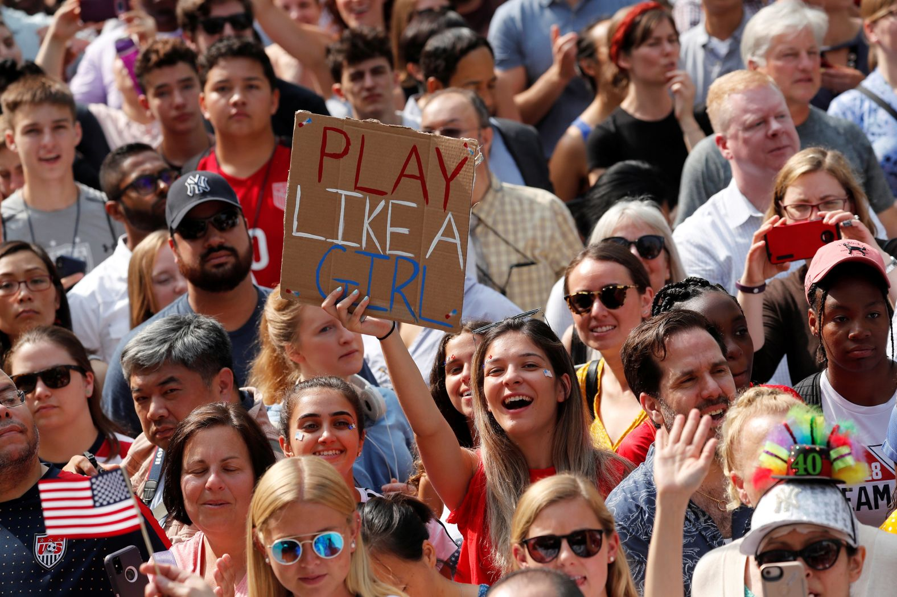

Mistreatment, unequal pay, and discrimination persist. And yet, among the athletes, there is a great feeling of solidarity, and a sense of increasing opportunity
Spain qualified for the Women’s World Cup for the first time in 2015. That was also the year that the Barcelona Femení, the women’s side of the legendary F.C. Barcelona, became a professional team. The women’s team had been around since 1970, when a group of female supporters of the men’s club donned white shirts, blue shorts, and Barça socks, and played a match at Barcelona’s longtime stadium, Camp Nou, to raise money for children’s hospitals. But, for decades, they held training sessions in the evening, because the team’s players were also students or had paying jobs in the daytime. The club recognized the women’s team officially in 2002, and, in 2011, the Femení managed to win La Liga, their first official title. But women’s club soccer remained an afterthought: two leagues had just failed in the United States, and many of the men’s clubs in Europe and Latin America did not have women’s teams. Those that did were mostly semi-professional, at best.
When F.C. Barcelona finally decided to invest in the women’s side, they faced a choice: buy a championship team or build one. Buying one was a real possibility: an entire roster of the highest-paid players in the world would have cost about as much as a single substitute on the men’s side. Other major European clubs, including Olympique Lyonnais and Chelsea, took that approach, more or less, intensely recruiting foreign talent and building top-flight facilities—and Barcelona did sign major players from elsewhere. But the club has deep regional ties, and a tradition of drawing on local talent, so it decided to focus primarily on player development. It hired nutritionists, psychologists, fitness coaches, medical staff, a kit manager, and technical staff. The team established a regional and international scouting department, and the staff gathered so much biometric and performance data on its players that coaches needed two days to download and analyze it after every game.
By 2019, the club’s budget was nearly four million dollars—less than half of one per cent of the budget of the men’s side (which is deeply in debt), but still an outlier in a league where the average salary was less than twenty thousand dollars. The club invested in the women’s second team, too, and in its youth teams, and it increased opportunities for girls at its legendary academy. The Femení quickly developed an ethos of intensity and relentless improvement. In 2022, Lucy Bronze, one of England’s stars, arrived in Barcelona after stints in Lyon, in the French league, and Manchester City, in England—two of Europe’s top clubs. She was amazed at what she found. “There are just, like, clones and clones and clones of these amazing, technical, intelligent players,” she told ESPN.
The team played a certain way, stretching the field and controlling spaces with a combination of deep tactical understanding and imagination. The midfielder Alexia Putellas, who was born not far from Camp Nou, epitomized the team’s gorgeous style. She could disappear on the dribble, blur the boundary between defense and offense, score from any position, warp the field with a glance. In 2021, she won the Ballon d’Or Féminin, the award for the best player in the world—and Barcelona also won UEFA awards that year for best goalkeeper, defender, midfielder, forward, and coach. The following year, Putellas won the Ballon d’Or again, despite tearing her A.C.L. right before the Euros; even without her, the Femení dominated the Champions League, which consists of the best teams in Europe. Players like Aitana Bonmatí—herself a Top Five player in the world—and the young phenom Salma Paralluelo proved the depth of the program. In May, Barcelona lost its first game in two years. It finished the Liga season having scored a hundred and eighteen goals while conceding only ten, a difference of a hundred and eight. In June, it won the Champions League.
The team normally plays in Johan Cruyff Stadium, which seats six thousand fans. But last year it played twice at Camp Nou, and both games were attended by more than ninety thousand fans. The club reported that the women’s team had turned an $8.5-million profit. When the national teams around the world announced their final rosters for the Women’s World Cup, Barcelona was the most represented club, with eighteen players selected. OL Reign, from the National Women’s Soccer League, in the United States, was next, with seven. When ESPN ranked the top twenty-five women’s soccer players in the world this year, it included two players from Spain in the Top Five.
Given the calibre of Spanish players not only at Barcelona but at Real Madrid and Atlético, one might assume that Spain would be favored to win the World Cup. In a better world, it would be—even an undermanned squad beat the United States 2–0 in a friendly last fall. In its first game, Spain beat Costa Rica, 3–0. Spain took forty-six shots on goal; Costa Rica took one. But a World Cup title for Spain would be a surprise, for reasons that have nothing to do with the quality of its players. Last September, fifteen women, who came to be known as Las 15, privately sent identical letters to the Royal Spanish Football Federation, the R.F.E.F., stating that they would refuse call-ups for the national team because of their distrust of the coach, Jorge Vilda. Three other players—Putellas; Irene Paredes, then the team’s captain; and Jennifer Hermoso, who was also recovering from injury—did not send the e-mail but later signalled their support for the protesting players’ effort. Six of the fifteen, plus Putellas and Paredes, played for Barcelona.
The R.F.E.F. released a statement announcing that it had received the letter, which the players had not made public, and declared that the players’ complaints were unacceptable. In the weeks that followed, more details emerged about those complaints: there were reports of bed checks in hotels and inspections of shopping bags during training camps; allegations that injuries and training sessions had been mismanaged. The players had approached Vilda and the R.F.E.F. on more than one occasion to voice their concerns, they said, and had been brushed aside. They wanted the federation to treat the national team as a “professional project,” they wrote in the letter. They wanted the same kind of commitment that they saw from their club teams. In response, Vilda called the letter “unjust,” and R.F.E.F. told Las 15 that, if they wished to play for the national team again, they would have to apologize.
This could be a weird Women’s World Cup. It is, by most measures, the biggest women’s sporting event in history. Thirty-two nations are participating, up from twenty-four at previous World Cups. More than a million tickets have already sold, another record, according to FIFA. The tournament is being held in Australia and New Zealand, and Australia’s opening match, against Ireland, had to be moved from Sydney Football Stadium, which can hold forty-five thousand spectators, to Stadium Australia, which can hold around eighty thousand, owing to the ticket demand. The total prize money on offer is a hundred and ten million dollars, nearly four times the purse at the previous World Cup.
The 2019 World Cup ended with the crowd serenading the champion United States with chants of “equal pay.” Now Norway, Costa Rica, New Zealand, Australia, England, Ireland, Spain, the Netherlands, and the United States have committed to paying their men’s and women’s sides equally. In a landmark agreement after years of legal battles, the U.S. announced it would pool the World Cup money of both teams and split it up. Other nations have promised equal match bonuses for men’s and women’s players, and equivalent percentages of the disparate distributions of prize money paid by FIFA to their federations—meaning that, in most cases, the men will make more, because FIFA pays them more. The prize for winning the 2022 World Cup was forty-two million dollars; for the women, it will be ten and a half million. FIFA has announced its intention to award equal prize money at the men’s and women’s World Cups, in 2026 and 2027, respectively.
FIFA is also providing more money for preparation, travel, and accommodations, and, for the first time, has promised that players will receive bonuses, rather than leaving it to their federations to allocate the money. Those bonuses begin at thirty thousand dollars, for the group stage, and increase at each level of the tournament, topping out at two hundred and seventy thousand for players in the final. Even the bottom of that range could be life-changing for many players: a survey by the global players’ union FIFPro found that just forty per cent of the athletes who competed in World Cup qualifying matches considered themselves professional athletes. Twenty-nine per cent reported not being paid for playing for the national team.
There is an overwhelming feeling of progress and solidarity in the women’s game, and a sense of growing opportunity, not just for the players at this World Cup but for girls and women at all levels, across the world. And, yet, every few weeks—sometimes, it seems, every few days—a new scandal emerges about the mistreatment or abuse of players by coaches and officials. In March, three of France’s star players announced that they would no longer play for the national team’s coach, Corinne Diacre, citing mental-health concerns. (In a statement from her lawyer to the Associated Press, Diacre called the accusations a “smear campaign,” but the federation concluded that the “fracture” on the team was irreparable.) The Jamaican team is so underfunded that the mother of a player resorted to crowdfunding in order to help pay for the team’s trips to Australia and New Zealand. The Nigerian team has said it has still not received all the money it is owed. The South African team refused to play a warmup friendly before leaving for the World Cup, a standoff that resulted from a pay dispute. (Officials scrambled to field a team of substitutes, including, ultimately, a thirteen-year-old.)
Other teams have it worse: players from Zambia, Haiti, and Colombia have recently accused coaches or federation officials of sexual abuse or misconduct. Similar stories have played out elsewhere—including in the United States, where, in 2021, players began speaking publicly about alleged abuse by coaches in the National Women’s Soccer League. (U.S. Soccer has played a critical and operational role in the maintenance of the league, and, according to investigators who finally looked into the players’ accusations, bore some responsibility for the lack of accountability.) Last summer, at the Under-20 Women’s World Cup, in Costa Rica, FIFA piloted a safeguarding program intended to protect fans and players from abuse and harassment, and it will have a similar program in place again in Australia and New Zealand, with educational programs for players and other people around the sport, a training program, and confidential pathways for reporting abuse. But there is some skepticism that FIFA is capable of addressing these matters. It was FIFA’s own former president, Sepp Blatter, who once suggested that women’s soccer would be more popular if the players wore tight shorts.
FIFA, like the national federations it oversees, is not particularly adept at making the women’s game more popular. It was only after more than a billion viewers tuned in to the 2019 World Cup, in France, that the organization seemed to realize that it could be making money from the television rights to the women’s tournament—previously, it had thrown them in as a bonus for broadcasters who bought the rights to the men’s. FIFA publicly set the over-all value of the rights around three hundred million dollars. Broadcasters, accustomed to getting the rights as a free add-on to the men’s tournament—and worried about the time difference between the Southern Pacific and Europe, where many games will be aired in the middle of the night—balked at the asking price.FIFA’s president, Gianni Infantino, who has never missed an opportunity to spin the most cynical moves as human-rights issues, then threatened a blackout, and framed his position as a moral stand, in a sort of perversion of the players’ demands for equal pay: the low bids were a “slap in the face of all the great FIFA Women’s World Cup players and indeed of all women worldwide,” he said. Finally, in June, FIFA and the European Broadcasting Union reached a deal to air the tournament in England, Germany, France, Spain, and Italy. In Japan, a deal was not reached with the state broadcaster until mid-July, less than a week before the start of the tournament. (In the U.S., Fox had already bought the World Cup TV rights, years ago, through the 2026 tournament, getting the Women’s World Cups in the bargain.)
FIFA has been betting that this World Cup will break viewership records, but the uncertainty around television rights has meant that broadcasters in Europe and Japan missed valuable windows to promote the tournament. This wouldn’t matter much if women who play soccer weren’t forever being asked to justify their sport by pointing to ever-increasing ratings. But they are, and FIFA, of course, knows that.
Many of these controversies, which range from the merely frustrating to the genuinely heartbreaking, could be described, at least in part, as growing pains—as indications that women’s soccer and its players are beginning to get the attention and the respect that they deserve. Players are no longer afraid of imperilling the sport’s survival if they insist on better treatment, and, in much of the world, public sentiment is on their side. But this also makes the continued institutional failures all the more galling. It is no longer tenable to say that women’s soccer simply isn’t popular, or that it can’t be profitable, or that committing resources won’t do enough to elevate the level of skill. Just look at what Barcelona has done in less than a decade.
And yet consider how the R.F.E.F. responded when its players demanded change. The federation did invest in a few improvements, including better travel arrangements, new trainers, and medical staff. But it made no change in management: Vilda is still the coach. When he announced his thirty-player provisional squad, in June, three Barcelona players who were among the fifteen were on the list. So was Putellas, back from her knee injury, to the joy of fans around the world. After several meetings since the e-mails were sent, Vilda said the situation is now “practically resolved save a few details.” It is not clear how, or whether, any of them apologized. But Barcelona’s Mapi León, one of the top defenders in the world, said that her “values come first,” and she is among those on the list who are still not playing for Spain. It also appears that Vilda may be one to hold a grudge: one of the women who sent the letter, Barcelona’s starting goalkeeper, Sandra Paños, indicated that she would be available to play. Vilda, emboldened, selected her backup instead.